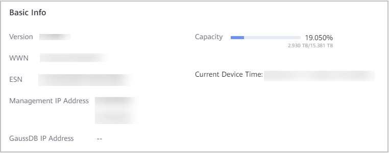

An equipment serial number (ESN) is a character string that uniquely identifies a device. An ESN is required when you apply for licenses, request device repair services, or configure eService.
Context
- You can query the ESN of the OceanProtect via the controller enclosure information plate, OceanProtect management page, or CLI.
- For a multi-controller system with two or more controller enclosures, the ESN of the system is the ESN of controller enclosure 0. The ESN of the multi-controller storage system queried on the management interface or the CLI through the management network port of any controller enclosure is the ESN of controller enclosure 0. You are advised to use the OceanProtect management page or the CLI to query the device ESN. To check the ESN on the information plate, determine the position of controller enclosure 0 by referring to the system networking diagram used when additional controllers are added and then check the ESN on the information plate of controller enclosure 0.
Querying the ESN on the Information Plate
The information plate is located on the right side of the front panel of a controller enclosure, as shown in Figure 1. You can pull out the information plate from the controller enclosure to query device information.
Figure 1 Information plate position on a 2 U controller enclosure
Querying the ESN on the Management Page
- Choose System > Infrastructure > Cluster Management.
- In the Local Cluster Nodes area of the Backup Cluster tab page, click the node name.
- In the Basic Info area of the displayed Node detail dialog box, view the value of ESN, which is the current ESN of the system, as shown in Figure 2.
Figure 2 Basic system information
Viewing the ESN on the CLI
- Use PuTTY to log in to the CLI as user admin.
- Run the show system general command. In the output, SN indicates the ESN.
admin:/>show system general
System Name : Huawei.Storage
Health Status : Normal
Running Status : Normal
Total Capacity : 996.471TB
SN : 2102354PBA13D9988001
Location :
Product Model : OceanProtect X8000
Product Version : XXXX
High Water Level(%) : 80
Low Water Level(%) : 20
WWN : 210030fbb8c80ded
Time : 2022-06-17/10:06:16 UTC+08:00
Patch Version :
Description :
Copyright © Huawei Technologies Co., Ltd.